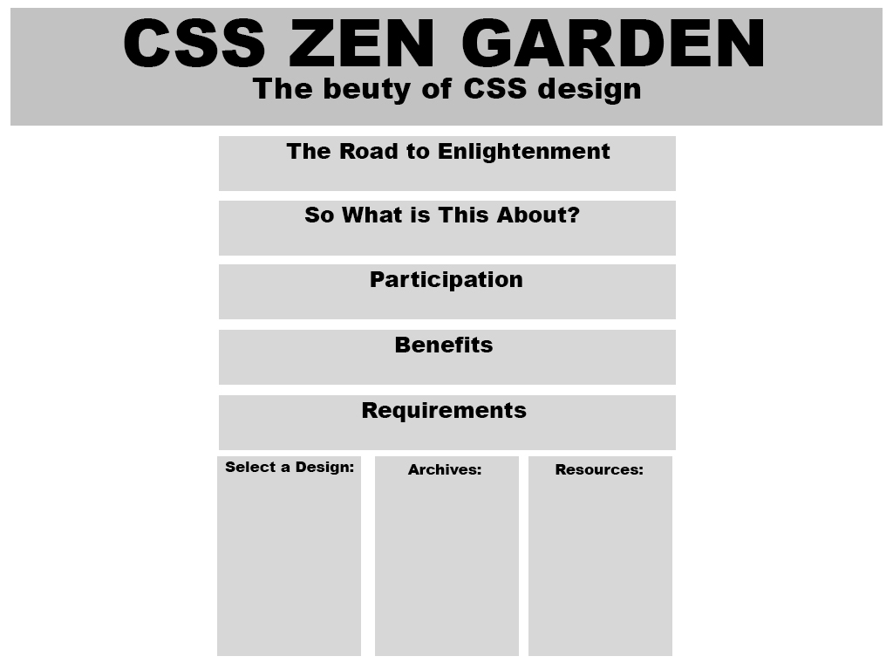

Välkommen
Välkommen till sidan där du kan hitta alla mina arbeten
Välkommen till sidan där du kan hitta alla mina arbeten
Jag fick idén från att jag har ett genuint intresse för Hearthstone och de var nåt jag vill göra nåt slags spel om. Jag kom då på att en trivia vorre perfekt för de då jag inte direkt känner till någon trivia om just Hearthstone. Just nu är de ju väldigt basic och inte speciellt utvecklat men de är verkligen nåt jag kan tänka mig jobba vidare på och göra till nåt mycket större. Visa de för några vänner och dom tyckte också de var en bra och rolig grej som absolut kan utvecklas till något större.
Reflektion över grupparbete b_3 och b_4. Vi var 3 st i gruppen, jag Johan C och Sofie. Vi diskutera först över slack vad vi hade för idéer och kom ganska snabbt överens om nåt vi alla gillade. Johan C var väl den i gruppen som var nån sorts projektledare då han är redan väldigt duktig redan när de kommer till html och css så de var väl han som kolla så allt blev rätt. När ja menar att allt blev rätt så menar ja efter var och en hade gjort klar sin del av sidan, då vi dela upp hela sidan i delar som var och en skulle fixa. Jag personligen tyckte de var otroligt bra att ha Johan C i min grupp då jag visste att jag hade nån att vända mig till när ha fastna på nåt. Annars tycker ja själva uppgifterna var väldigt bra då man lärde sig väldigt mycket då de var ganska mycket faktorer som skulle vara med i uppgiften. Jag tycker själv att man lär sig mer i grupparbete där man kan diskutera nåt och reflektera, speciellt mellan mig och Johan C då vi satt väl mest av oss i gruppen och diskutera i hangout på slack över olika saker som kom upp till sidan. Men vi hade väl inga direkta problem i gruppen, vi fördela och gjorde våran uppgift. Då jag låg på en ganska låg nivå när de kommer till programmering innan kursen, så känner ja nu efter dom här uppgifterna att jag har utvecklats mycket och förstår otroligt mycket mer när de kommer till programmering och att de blir roligare och roligare varje gång ja lär mig nåt nytt.
Här kan du se skissen till min design, tanken bakom desigen är att de ska vara "cleant", så att texten man läser bara går i ett flöde utan att röra till de. Så när man kollar på sidan så är de själva texten man fastnar för och de är den som får allt intresse. 